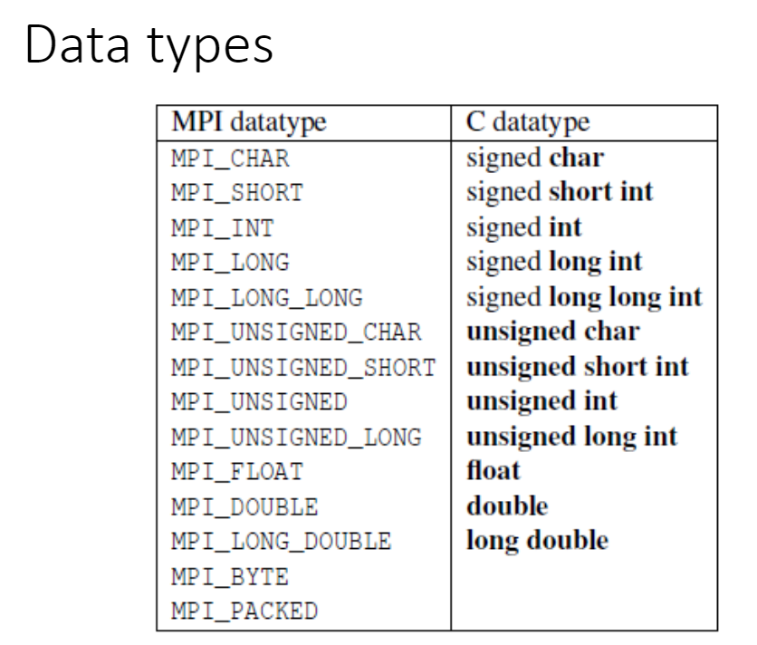
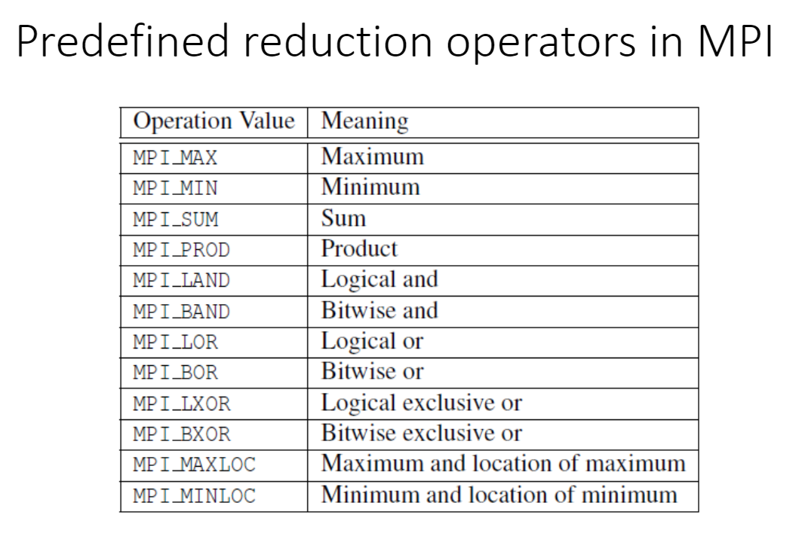
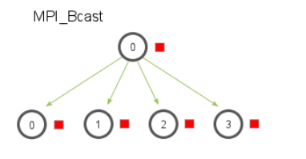
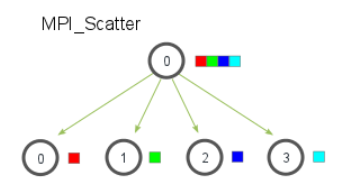
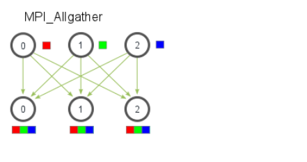

从Hello,world开始
1 2 3 4 5 6 7 8 9 10 11 12 13 14 15 16 17 18 19 20 21 22 23 24 25 26 27 28 29 30 31 32 33 34 #include <stdio.h> #include <string.h> #include <mpi.h> const int MAX_STRING = 100 ;int main (void ) char greeting[MAX_STRING]; int comm_sz; int my_rank; NULL , NULL ); if (my_rank != 0 )sprintf (greeting, "Greetings from process %d of %d!" , my_rank, comm_sz);strlen (greeting)+1 , MPI_CHAR, 0 , 0 , MPI_COMM_WORLD); else printf ("Greetings from process %d of %d!\n" , my_rank, comm_sz);for (int q=1 ; q<comm_sz; q++)0 , MPI_COMM_WORLD, MPI_STATUS_IGNORE);printf ("%s\n" , greeting);return 0 ;
编译与运行方法
1 2 3 4 5 6 编译：4 ./main
简单回顾一下上面出现的函数：
MPI_Init()、MPI_Finalize()、MPI_Comm_size()、MPI_Comm_rank()、MPI_Send()、MPI_Recv()
通信子 指的是一组可以互相发送消息的进程集合
注意：MPI_COMM_WORLD是MPI_Comm类型的变量，即MPI通信子（communicator），不需要额外定义。或者可以理解为一个通信域，你的进程都在这个域里面，里面包含了进程数和进程号等信息。
此外，通信子里面的comm_sz表示进程的数量，my_rank表示进程号，是以指针的形式传递
通信 相关的函数：
MPI_Send()、MPI_Recv()
1 2 3 4 5 6 7 int MPI_Send ( void * msg_buf_p, int msg_size, MPI_Datatype msg_type, int dest, int tag, MPI_Comm communicator) ;
1 2 3 4 5 6 7 8 int MPI_Recv ( void * msg_buf_p, int buf_size, MPI_Datatype buf_type, int source, int tag, MPI_Comm communicator, MPI_Status* status_p) ;

特殊常量：MPI_ANY_TAG，可以将它传给MPI_Recv的参数tag。称为通配符 （wildcard）。可以使一个进程接收多条来自另一个进程的有着不同标签的消息。
关于发送和接收消息的过程
MPI_Send有两种可能：缓冲与阻塞
缓冲：即消息会存放在一个发送缓冲区中，而MPI_Send函数立即返回
阻塞：即系统将发生阻塞，一直等待，直到开始发送消息
出现哪一种情况一般取决于默认的消息截止大小 （"cutoff"
message
size）。如果消息的大小小于截止大小，则它会被缓冲；如果消息的大小大于截止大小，函数将会被阻塞
MPI_Recv则只有一种可能——阻塞。只有当收到一条匹配消息的时候，才会返回。
MPI消息的特性
不可超越性 （nonovertaking），即一个q进程发送两条消息给r进程，这两条消息一定是按顺序的。
而多个进程发送消息则会出现异步性
集合通信
集合通信相关函数：MPI_Reduce()
1 2 3 4 5 6 7 8 int MPI_Reduce ( void * input_data_p, void * output_data_p, int count, MPI_Datatype datatype, MPI_Op operator, int dest_process, MPI_comm comm) ;

image-20210323225622760
关于集合通信
一般情况下，count设置为1，用于一个变量的集体运算，如：
1 MPI_Reduce(&local_int, &total_int, 1 ,MPI_DOUBLE, MPI_SUM, 0 , MPI_COMM_WORLD);
如果设置count>1，则是对一个向量的运算，如：
1 2 3 double local_x[N], sum[N];0 , MPI_COMM_WORLD);
集合通信的特点
通信子中的所有进程必须调用相同的集合通信函数
每个进程传递给MPI集合通信函数的参数必须是“相容的”。比如，dest_process的值应该是相同的
参数output_data_p虽然只作用在目的进程中，但是其他进程也需要写上这个参数，会被置为NULL
集合通信不使用标签，只通过通信子和调用的顺序进行匹配。具体可看书本p69。
禁止使input_data_p和output_data_p使用同一个缓冲区，这将会不可预测。
蝶形结构
1 2 3 4 5 6 7 int MPI_AllReduce ( void * input_data_p, void * output_data_p, int count, MPI_Datatype datatype, MPI_Op operator, MPI_comm comm) ;
它的基本参数与reduce一致，唯一的不同是没有dest_process，这是因为它是将结果发布给所有的进程。是reduce的一个相反的过程
蝶形结构 ：即进行全局运算之后，将结构发送给所有的进程
广播函数
1 2 3 4 5 6 int MPI_Bcast ( void * data_p, int count, MPI_Datatype datatype, int source_proc, MPI_Comm comm) ;
数据分发
划分的方式：
块划分
循环划分
块-循环划分
散射 ：用于0号进程读入整个向量，但只将分量发送给需要分量的其他进程：
1 2 3 4 5 6 7 8 9 int MPI_Scatter ( void * send_buf_p, int send_count, MPI_Datatype send_type, void * recv_buf_p, int recv_count, MPI_Datatype recv_type, int src_proc, MPI_Comm comm) ;
MPI_Scatter只适用于块划分法
需要注意的是，发送的向量大小不是send_buf_p的大小，而是和recv_count一样的，真正发送出去的大小
聚集 ：将向量的所有分量都收集到0号进程上，然后0号进程再进行输出
1 2 3 4 5 6 7 8 9 int MPI_Gather ( void * send_buf_p, int send_count, MPI_Datatype send_type, void * recv_buf_p, int recv_count, MPI_Datatype recv_type, int dst_proc, MPI_Comm comm) ;
MPI_Gather同样只适用于块划分法 ，基本结构与MPI_Scatter类似
全局聚集 ：将向量的所有分量都收集后，再分发到所有的进程上
1 2 3 4 5 6 7 8 int MPI_AllGather (void * send_buf_p,int send_count, MPI_Datatype send_type,void * recv_buf_p,int recv_count, MPI_Datatype recv_type,MPI_Comm comm);
好图，总结一下：


<tr>
<td><img src="image-20210710185248694.png" alt="image-20210710185248694" style="zoom:67%;" /></td>

</tr>
派生数据类型
由于发送消息耗费的时间巨大，我们要尽可能地减少消息的发送。具体有三种方法：
通信函数中的count参数
派生数据类型
MPI_Pack/Unpack函数
1 2 3 4 5 6 7 MPI_Type_create_struct(int count,int array_of_blocklengths[],
如何获取地址呢？
1 2 3 int MPI_Get_address ( void * location_p, MPI_Aint* address_p) ;
计时
MPI自带一个函数：
1 2 3 4 5 6 double start,finish;printf ("%e" ,finish-start);
也可以使用timer库函数，他们两个返回的都是墙上时钟时间：
1 2 3 4 5 6 7 #include "timer.h" double start,finish;printf ("%e" ,finish-start);
当然，上述的两种写法，一般用于串行代码的计时。回想第二章所学，计时需要先同步，并记录每个进程最大值，最终获取并行部分代码运行的总时间。
1 2 3 4 5 6 7 8 9 10 double local_start, local_finish, local_elapsed, elapsed;1 , MPI_DOUBLE, MPI_MAX, 0 , comm); if (my_rank == 0 )printf ("Elapsed time = %e seconds\n" , elapsed);
交换奇偶排序
是冒泡排序的一种扩展。
定理 ：设A是一个拥有n个键值的列表，作为就交换排序算法的输入，那么经过n个阶段后，A能够排好序。
定理 ：如果p个进程运行并行奇偶交换排序算法，则p个阶段后，输入列表排序完毕。
重点，再看看书本P86~88
安全性
回忆之前的，MPI_Send有两种不同的方式来实现：缓冲和阻塞。假设所有的进程都进入阻塞状态，就会导致没有进程使用MPI_Recv，进入死锁 状态。
幸好，MPI提供了一个函数，它会执行一次阻塞的消息发送函数和一次消息接收函数
1 2 3 4 5 6 7 8 9 10 11 12 13 14 int MPI_Sendrecv ( void * send_buf_p, int send_size, MPI_Datatype send_type, int dest, int send_tag, void * recv_buf_p, int recv_size, MPI_Datatype recv_type, int source, int recv_tag, MPI_Comm communicator, MPI_Status* status_p) ;
如果接收缓冲区和发送缓冲区是一样的话，还有另一个函数：
1 2 3 4 5 6 7 8 9 10 int MPI_Sendrecv ( void * msg_buf_p, int msg_size, MPI_Datatype msg_type, int dest, int send_tag, int source, int recv_tag, MPI_Comm communicator, MPI_Status* status_p) ;